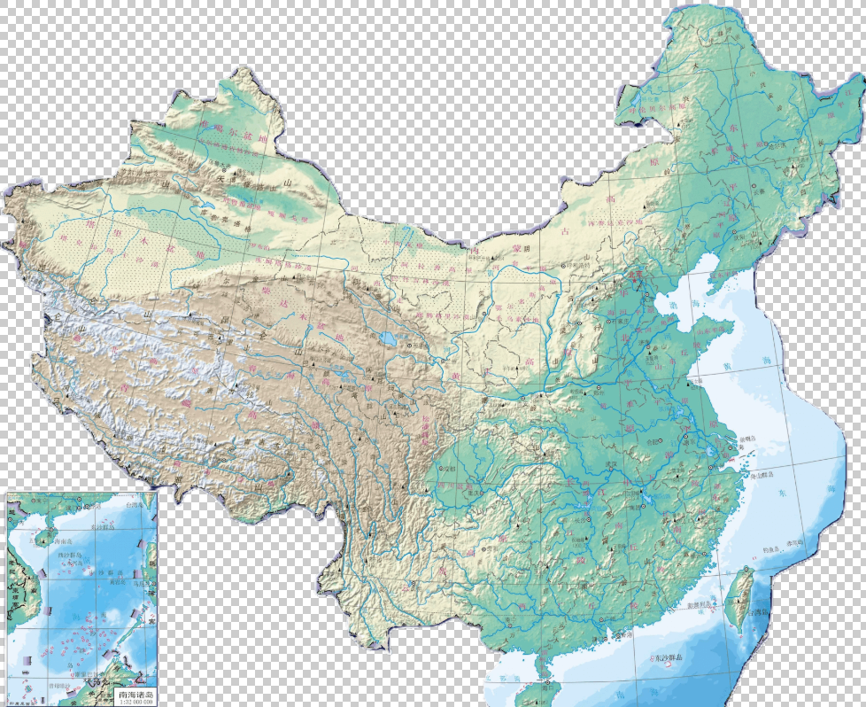

植被分布
(请点击地图上的标记查看详情)

🏔️
黄山
🏔️
泰山
🗻
珠峰
🏔️
华山
🏔️
峨眉山
🏔️
庐山
🏔️
武夷山
🌳
张家界
🗻
长白山
🏔️
玉龙雪山
🚡
衡山
🏔️
恒山
🏔️
嵩山
🌅
黄河
🌊
长江
🚤
南海
🏖️
珠江
💧
黑龙江
💧
澜沧江
💧
雅鲁藏布江
🌊
青海湖
🏞️
鄱阳湖
🏞️
洞庭湖
🏞️
太湖
🏞️
西湖
🏜️
塔里木盆地
请点击地图上的标记查看详情
探索中国的壮丽山河，点击地图上的标记发现更多精彩
茶树
黄山
黄山位于安徽省南部，以奇松、怪石、云海、温泉"四绝"著称，是中国十大名山之一，也是世界文化与自然双重遗产。
泰山
泰山位于山东省中部，有"五岳之首"、"天下第一山"之称，是中华民族的象征，也是东方文化的缩影。
珠穆朗玛峰
珠穆朗玛峰位于中国与尼泊尔边界，是世界海拔最高的山峰，被誉为"地球之巅"，是无数登山者向往的圣地。
茶叶
黄河
黄河是中华民族的母亲河，发源于青藏高原，流经九个省区，全长5464公里，是中国第二长河，也是中华文明的主要发源地。
长江
长江是中国第一大河，世界第三长河，全长6300余公里，流经11个省市区，孕育了灿烂的长江文明。
南海
南海是中国三大边缘海之一，海域辽阔，资源丰富，岛屿众多，是中国重要的海洋国土和海上丝绸之路的重要通道。
区域特色
北国风光
北国风光以冰雪景观著称，冬季银装素裹，冰雕雪塑，展现了北国特有的雄浑壮美与冰雪文化。
江南水乡
江南水乡以小桥流水、古镇园林为特色，展现了温婉秀丽的江南文化和精致典雅的水乡风情。
西部高原
西部高原以壮丽的高原风光、独特的民族文化和神秘的宗教氛围，展现了中国的辽阔与多元。
山河数据洞察
名山海拔对比
最高峰
珠穆朗玛峰
平均海拔
3,245m
河流长度分布
最长河流
长江
总长度
11,764km
游客访问热度
最热门
黄山
年游客量
458万
四季访问分布
💡 秋季为最佳游览季节
名山统计
收录山峰: 28 座
平均海拔: 3,245 米
水域统计
主要河流: 12 条
总长度: 11,764 公里
游客统计
年访问量: 1,245 万
热门季节: 秋季
文化遗产
世界遗产: 8 处
5A景区: 15 个
（保护）山河知识问答
测试你的山河和保护山河知识
得分: 0
进度: 1/10
问题加载中...
山河知识小百科
五岳
东岳泰山、西岳华山、南岳衡山、北岳恒山、中岳嵩山
点击观看《中国五岳，你更喜欢哪个？》
四大河流
长江、黄河、黑龙江、珠江，总长度超过2万公里
点击观看《御剑飞行！带你看大美中国，江河奔腾》
地理之最
珠穆朗玛峰世界最高，青海湖中国最大咸水湖
点击观看《中国地理之“最”》
五大淡水湖
鄱阳湖、洞庭湖、太湖、洪泽湖、巢湖，水域辽阔
点击观看《我国面积最大的五座淡水湖》